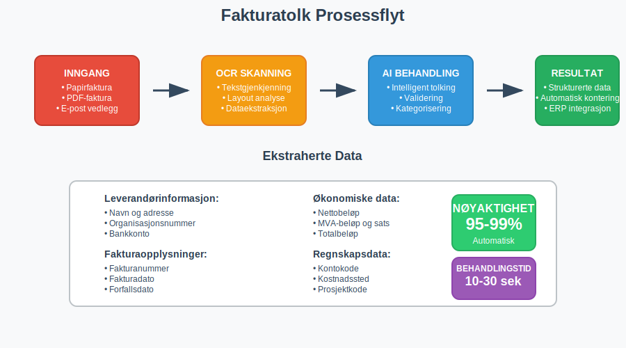
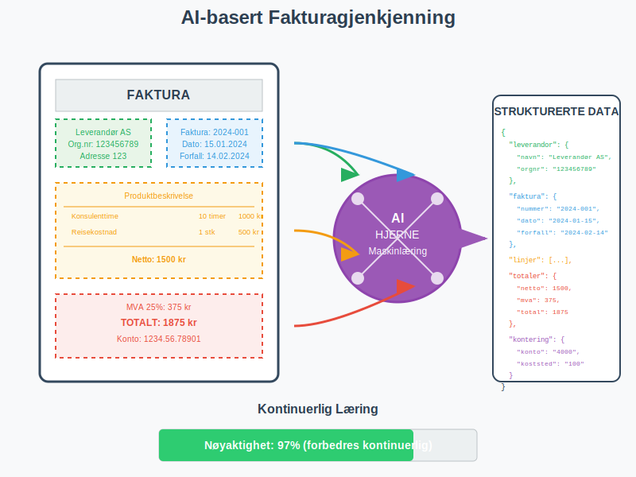
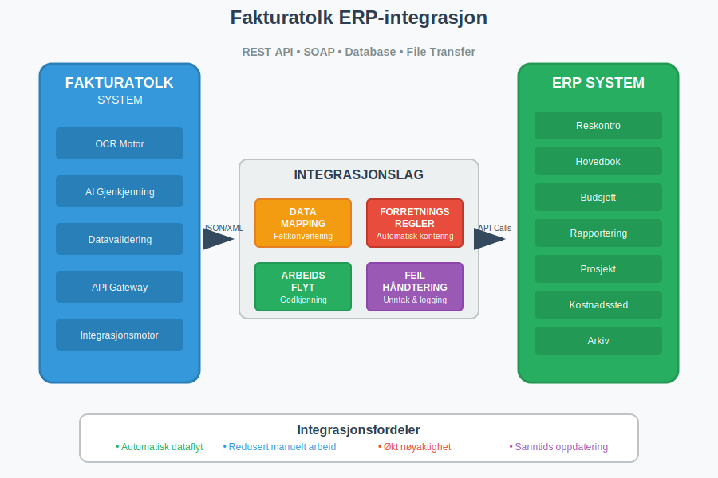

Fakturatolk er en avansert teknologi som kombinerer OCR (Optical Character Recognition) og kunstig intelligens for å automatisk lese, tolke og behandle fakturaer. Denne teknologien har revolusjonert måten bedrifter håndterer fakturabehandling på, og reduserer betydelig det manuelle arbeidet som tradisjonelt har vært nødvendig for å behandle innkommende fakturaer.
I moderne regnskapsføring er fakturatolk blitt et uunnværlig verktøy for å effektivisere bilagsmottak og sikre nøyaktig registrering av alle innkommende fakturaer.

Seksjon 1: Hvordan Fakturatolk Fungerer
Fakturatolk-teknologi baserer seg på flere avanserte komponenter som arbeider sammen for å automatisere fakturabehandlingen:
1.1 OCR-teknologi (Optical Character Recognition)
OCR-teknologi er kjernen i fakturatolk-systemet. Den konverterer bilder av tekst til maskinlesbar tekst ved å:
- Skanne dokumentet: Analyserer fakturaens layout og identifiserer tekstområder
- Gjenkjenne tegn: Konverterer pixler til bokstaver, tall og symboler
- Strukturere data: Organiserer informasjonen i logiske felt
1.2 Kunstig Intelligens og Maskinlæring
Moderne fakturatolk-systemer bruker AI-algoritmer for å:
- Lære fra mønstre: Forbedre nøyaktigheten over tid basert på behandlede fakturaer
- Forstå kontekst: Tolke informasjon basert på plassering og sammenheng
- Håndtere variasjon: Tilpasse seg ulike fakturaformater og leverandører

Seksjon 2: Fordeler med Fakturatolk
Implementering av fakturatolk-teknologi gir betydelige fordeler for bedrifter av alle størrelser:
2.1 Tidsbesparelse og Effektivitet
| Prosess | Manuell Behandling | Med Fakturatolk | Tidsbesparelse |
|---|---|---|---|
| Dataregistrering | 3-5 minutter | 10-30 sekunder | 85-95% |
| Kvalitetskontroll | 2-3 minutter | 30 sekunder | 75-85% |
| Arkivering | 1-2 minutter | Automatisk | 100% |
| Total per faktura | 6-10 minutter | 1-2 minutter | 80-90% |
2.2 Reduserte Feil og Økt Nøyaktighet
Fakturatolk eliminerer vanlige menneskelige feil som oppstår ved manuell dataregistrering:
- Tastefeil: Automatisk registrering reduserer risikoen for feilaktig inntasting
- Lesbarhetsutfordringer: OCR håndterer dårlig håndskrift og utydelige dokumenter
- Konsistens: Standardisert behandling sikrer lik kvalitet på alle fakturaer
2.3 Forbedret Internkontroll
Fakturatolk styrker bedriftens internkontroll gjennom:
- Sporbarhet: Komplett logg over alle behandlede fakturaer
- Validering: Automatisk kontroll mot forventede verdier og mønstre
- Rapportering: Detaljerte rapporter over behandlingsstatus og eventuelle avvik
Seksjon 3: Integrasjon med Regnskapssystemer
Moderne fakturatolk-løsninger integreres sømløst med eksisterende ERP-systemer og regnskapsprogramvare. Denne integrasjonen bygger på API-integrasjon og automatisering som sikrer sømløs dataflyt fra fakturatolk til regnskapssystemet:

3.1 Automatisk Kontering
Fakturatolk kan automatisk foreslå eller utføre kontering basert på:
- Leverandørhistorikk: Tidligere konterte fakturaer fra samme leverandør
- Produktkategorier: Automatisk klassifisering basert på varebeskrivelse
- Kostnadssteder: Tildeling til riktige avdelinger eller prosjekter
3.2 Godkjenningsarbeidsflyt
Systemet kan automatisk rute fakturaer gjennom definerte godkjenningsarbeidsflyter:
- Automatisk godkjenning: For fakturaer under definerte beløpsgrenser
- Enkel godkjenning: For fakturaer som matcher forventede mønstre
- Manuell godkjenning: For avvikende eller høye beløp
Seksjon 4: Typer Fakturatolk-teknologi
Det finnes flere ulike tilnærminger til fakturatolk, hver med sine styrker og anvendelsesområder:
4.1 Template-basert Gjenkjenning
Template-baserte systemer bruker forhåndsdefinerte maler for kjente fakturaformater:
Fordeler:
- Høy nøyaktighet for kjente formater
- Rask implementering for standardleverandører
- Lavere kostnad for enkle løsninger
Ulemper:
- Begrenset fleksibilitet for nye formater
- Krever manuell oppsett for hver leverandør
- Vanskelig å håndtere layoutendringer
4.2 AI-basert Intelligent Gjenkjenning
AI-baserte systemer bruker maskinlæring for å forstå fakturaer uavhengig av format:
Fordeler:
- Håndterer alle fakturaformater automatisk
- Lærer og forbedres kontinuerlig
- Krever minimal manuell konfigurasjon
Ulemper:
- Høyere initial kostnad
- Krever treningsdata for optimal ytelse
- Mer kompleks implementering
4.3 Hybrid-løsninger
Mange moderne systemer kombinerer begge tilnærminger for optimal resultat:
- Template-basert for kjente, høyvolum leverandører
- AI-basert for nye eller sjeldne fakturaformater
- Kontinuerlig læring for å forbedre begge tilnærminger
Seksjon 5: Implementering av Fakturatolk
Vellykket implementering av fakturatolk krever grundig planlegging og systematisk tilnærming:
5.1 Forberedelse og Planlegging
Kartlegging av nåværende prosesser:
- Analyser eksisterende fakturavolum og -typer
- Identifiser flaskehalser i dagens arbeidsflyt
- Definer målsetninger for automatisering
Leverandøranalyse:
- Kategoriser leverandører etter volum og fakturaformat
- Identifiser de mest kritiske leverandørene for pilotfase
- Vurder behovet for spesialtilpasninger
5.2 Teknisk Implementering
| Implementeringsfase | Varighet | Hovedaktiviteter |
|---|---|---|
| Fase 1: Oppsett | 2-4 uker | Systemkonfigurasjon, integrasjoner |
| Fase 2: Testing | 2-3 uker | Pilottesting med utvalgte leverandører |
| Fase 3: Trening | 1-2 uker | Opplæring av brukere og prosedyrer |
| Fase 4: Utrulling | 2-4 uker | Gradvis overgang til full produksjon |
5.3 Kvalitetssikring og Oppfølging
Kontinuerlig overvåking:
- Måling av nøyaktighetsrater og behandlingstider
- Identifisering av problemområder og forbedringspotensial
- Regelmessig kalibrering av AI-modeller
Brukeropplæring:
- Opplæring i nye arbeidsflyter og verktøy
- Etablering av rutiner for kvalitetskontroll
- Dokumentasjon av beste praksis
Seksjon 6: Kostnader og ROI
Investering i fakturatolk-teknologi gir målbare økonomiske fordeler:
6.1 Kostnadselementer
Direkte kostnader:
- Lisenskostnader for programvare
- Implementering og konfigurasjon
- Opplæring og endringsledelse
- Løpende support og vedlikehold
Indirekte kostnader:
- Tid brukt på testing og kvalitetssikring
- Midlertidig redusert produktivitet under overgang
- Eventuelle systemintegrasjonskostnader
6.2 Besparelser og Gevinster
Direkte besparelser:
- Reduserte lønnskostnader for manuell fakturabehandling
- Færre feil og korrigeringer
- Raskere behandlingstid og bedre betalingsevne
Indirekte gevinster:
- Forbedret leverandørrelasjoner gjennom raskere betaling
- Bedre kontroll og oversikt over forpliktelser
- Frigjort kapasitet til mer verdiskapende aktiviteter
6.3 ROI-beregning
For en typisk bedrift med 1000 fakturaer per måned:
| Kostnadselement | Før Fakturatolk | Etter Fakturatolk | Årlig Besparelse |
|---|---|---|---|
| Lønnskostnader | 500 000 kr | 150 000 kr | 350 000 kr |
| Feilkostnader | 50 000 kr | 10 000 kr | 40 000 kr |
| Total besparelse | 390 000 kr | ||
| Investeringskostnad | 200 000 kr | ||
| Tilbakebetalingstid | 6 måneder |
Seksjon 7: Utfordringer og Begrensninger
Selv om fakturatolk-teknologi er kraftig, finnes det fortsatt utfordringer som må håndteres:
7.1 Tekniske Utfordringer
Dokumentkvalitet:
- Dårlig skannekvalitet kan redusere nøyaktigheten
- Håndskrevne notater og tillegg kan være vanskelige å tolke
- Skadede eller ufullstendige dokumenter krever manuell behandling
Formatvariasjon:
- Nye leverandører med ukjente formater
- Endringer i eksisterende fakturaformater
- Spesielle dokumenttyper som kreditnotaer og proformafakturaer
7.2 Organisatoriske Utfordringer
Endringsledelse:
- Motstand mot nye arbeidsmetoder
- Behov for omskilling av ansatte
- Endring av etablerte rutiner og prosedyrer
Kvalitetskontroll:
- Balanse mellom automatisering og manuell kontroll
- Etablering av nye kontrollrutiner
- Håndtering av unntak og avvik
7.3 Juridiske og Regulatoriske Hensyn
Fakturatolk må overholde krav til dokumentasjon i regnskap:
- Sporbarhet: Alle endringer og behandlinger må dokumenteres
- Oppbevaring: Originaldokumenter må oppbevares i henhold til bokføringsloven
- Revisjon: Systemet må kunne dokumentere behandlingsprosessen for revisor
Seksjon 8: Fremtiden for Fakturatolk
Fakturatolk-teknologi utvikler seg raskt, og fremtidige innovasjoner vil ytterligere forbedre kapasitetene:
8.1 Avansert AI og Maskinlæring
Natural Language Processing (NLP):
- Bedre forståelse av kontekst og betydning
- Automatisk kategorisering basert på tekstinnhold
- Intelligent håndtering av ustrukturerte data
Deep Learning:
- Forbedret gjenkjenning av komplekse dokumenter
- Automatisk tilpasning til nye formater
- Prediktiv analyse for bedre arbeidsflyt
8.2 Integrasjon med Nye Teknologier
Blockchain:
- Sikker og sporbar dokumentbehandling
- Automatiserte smart contracts for fakturabehandling
- Forbedret tillit og transparens
IoT og Automatisering:
- Direkte integrasjon med leverandørsystemer
- Automatisk generering og behandling av fakturaer
- Sanntids synkronisering av data
8.3 Regulatoriske Utviklinger
- Økt standardisering av elektroniske formater
- Krav til strukturerte data i offentlig sektor
- Forbedret interoperabilitet mellom systemer
Seksjon 9: Valg av Fakturatolk-løsning
Ved valg av fakturatolk-system bør bedrifter vurdere flere kritiske faktorer:
9.1 Funksjonelle Krav
Grunnleggende funksjoner:
- OCR-nøyaktighet for norske dokumenter
- Støtte for vanlige fakturaformater
- Integrasjon med eksisterende ERP-systemer
Avanserte funksjoner:
- AI-basert læring og forbedring
- Automatisk kontering og godkjenning
- Rapportering og analyse
9.2 Tekniske Krav
Ytelse og Skalerbarhet:
- Behandlingskapasitet og hastighet
- Mulighet for fremtidig vekst
- Oppetid og pålitelighet
Sikkerhet og Compliance:
- Datakryptering og tilgangskontroll
- Overholdelse av GDPR og norske regelverk
- Backup og gjenoppretting
9.3 Leverandørvurdering
Erfaring og Referanser:
- Dokumentert erfaring med norske bedrifter
- Referansekunder i samme bransje
- Support og vedlikeholdskapasitet
Kostnad og Verdi:
- Total eierkostnad (TCO) over tid
- Fleksible lisensmodeller
- Dokumentert ROI fra eksisterende kunder
Konklusjon
Fakturatolk representerer en fundamental endring i hvordan bedrifter håndterer fakturabehandling. Ved å kombinere OCR-teknologi med kunstig intelligens, tilbyr disse systemene betydelige fordeler i form av tidsbesparelse, reduserte feil og forbedret kontroll.
For bedrifter som behandler store volumer fakturaer, er implementering av fakturatolk ikke lenger et spørsmål om “hvis”, men “når”. De som tar i bruk denne teknologien tidlig vil oppnå konkurransefortrinn gjennom:
- Økt effektivitet i regnskapsprosesser
- Bedre kontroll over økonomiske forpliktelser
- Frigjort kapasitet til strategiske aktiviteter
- Forbedret leverandørrelasjoner gjennom raskere behandling
Samtidig er det viktig å huske at vellykket implementering krever grundig planlegging, riktig teknologivalg og effektiv endringsledelse. Bedrifter bør starte med en grundig analyse av sine behov og velge en løsning som passer deres spesifikke krav og fremtidige ambisjoner.
Med kontinuerlig utvikling innen AI og maskinlæring vil fakturatolk-teknologi bare bli mer kraftig og tilgjengelig. Bedrifter som investerer i denne teknologien i dag posisjonerer seg for fremtidens digitale regnskapsføring.